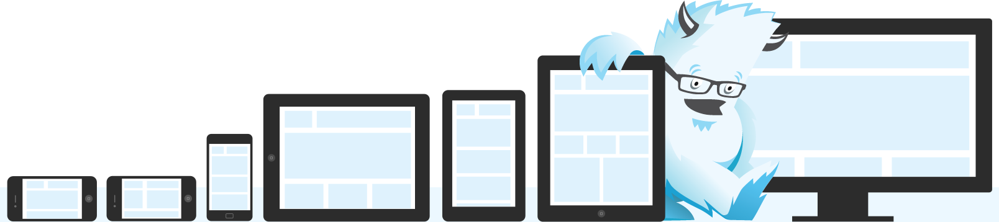
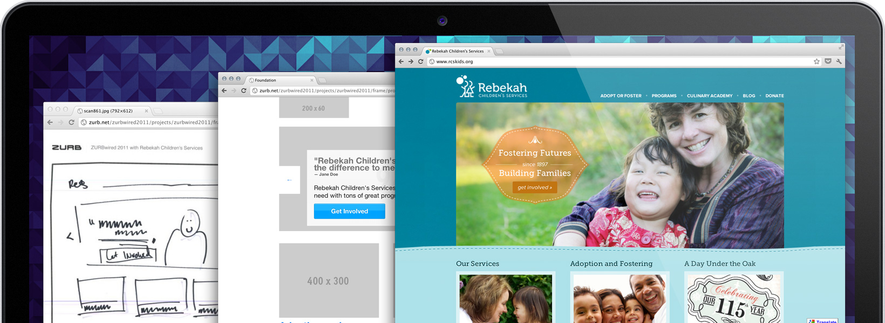
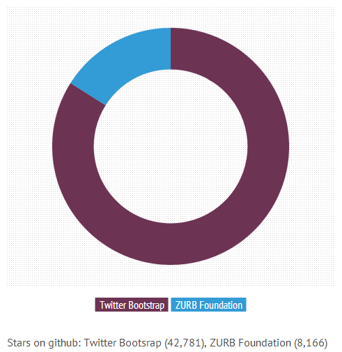
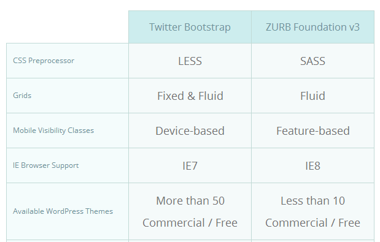
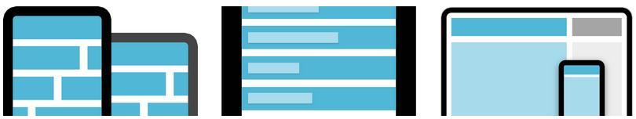
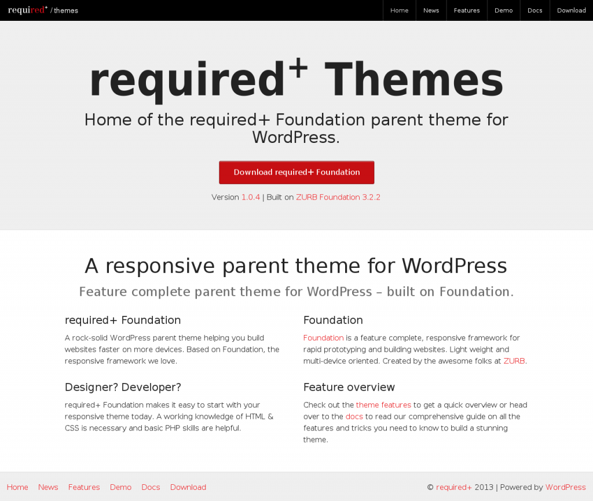
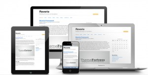
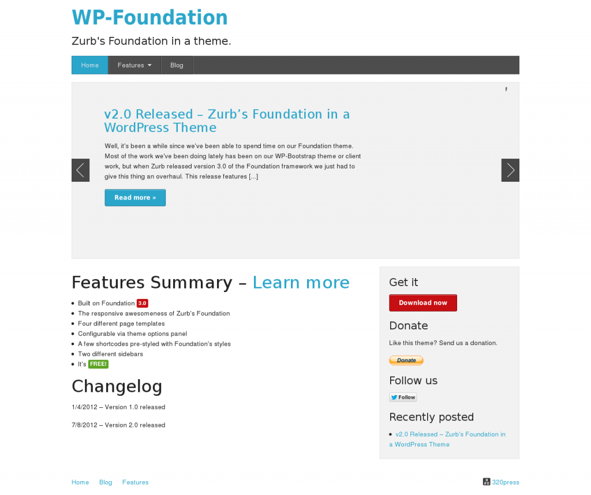

Foundation – это мощный CSS-фреймворк, который продолжительное время пребывал в тени Twitter Bootstrap, и только в последнее время пробивший себе дорогу в мир WordPress-тем. «Необычно усовершенствованный», как про него написано на сайте, обладающий поддержкой любых размеров сетки, начиная с мобильных телефонов и заканчивая телевизорами, этот фреймворк больше не может быть упущен из рассмотрения. Сегодня мы посмотрим на Foundation — издающийся по лицензии MIT фронтэнд-фреймворк, созданный компанией ZURB, Inc.
Обладая некоторыми успешными примерами использования, Foundation быстро завоевал популярность, в частности, для создания широкопрофильных сайтов, таких как Pixar или National Geographic. Этот многофункциональный, адаптивный фреймворк несет в себе ряд преимуществ, которых некоторым разработчикам не хватает в Twitter Bootstrap. Давайте сравним функциональность этих двух фреймворков, и укажем на опции, которые делают Foundation предпочтительным выбором.
Мощный CSS-фреймворк с йети в главной роли
Foundation содержит в себе все компоненты, необходимые для быстрого прототипирования, которое является основной целью использования CSS-фреймворка. Возможность быстрого создания сайтов выступает наивысшим приоритетом для фронт-энд разработчиков, ограниченных жесткими сроками сдачи проектов. Foundation был разработан для того, чтобы позволить вам быстро собирать прототипы и формировать код для современных сайтов и приложений, которые будут прекрасно смотреться на любых устройствах. Взгляните на различные темы от ZURB, чтобы получить немного вдохновения.
Быстрое создание сайтов с помощью обновленных фронт-энд инструментов
Если вы когда-либо создавали выпадающие меню или формы с нуля, то, скорее всего, у вас уже был печальный опыт, когда вам хотелось выколоть себе глаза. Именно такой опыт и подтолкнул меня к использованию CSS-фреймворков. Foundation особенно хорош, когда дело доходит до создания комплексных элементов пользовательского интерфейса. Также Foundation включает в себя некоторые инновационные пользовательские jQuery-плагины, которых вы не найдете в других фреймворках.
Вот быстрый обзор самых примечательных особенностей Foundation:
- Жидкий макет, поддерживающий вложенность, порядок источников, смещение, а также представление устройств.
- Многочисленные стили навигации, включая комплексную главную панель, которая поддерживает трехуровневую выпадающую навигацию для простых панелей, сайдбаров и дополнительных участков навигации.
- Элементы пользовательского интерфейса для всех важных материалов, включая уведомления, кнопки, подсказки, аккордеоны, таблицы, видео, миниатюры, формы, таблицы цен и т.д.
- Произвольный плагин Clearing для вывода на экран адаптивных лайтбоксов
- Reveal – произвольный плагин jQuery, позволяющий выводить простые модальные окна для всех устройств.
- Joyride – кроссбраузерный плагин, позволяющий создать экскурсию по вашему сайту или плагину.
Как сравнить Foundation с Twitter Bootstrap?
Нельзя сказать, что это война двух фреймворков, да и рассматривать их как конкурентов невозможно, учитывая, что они свободно распространяются: Bootstrap под лицензией Apache, а Foundation под лицензией MIT.
Однако чем популярнее становится фреймворк, тем более широко он используется, то есть поднимается уровень его дистрибуции. В этой сфере Bootstrap побеждает благодаря своей более широкой экосистеме, которая трансформируется в большее число инструментов, доступных разработчикам WordPress. Если звездочки на github можно рассматривать как индикатор текущего использования двух фреймворков, то мы получим следующее сравнение:
Даже учитывая то, что у Bootstrap имеется намного более развитая экосистема, остаются некоторые весомые причины для предпочтения именно Foundation.
Быстрое сравнение:
Таблица показывает некоторые наиболее примечательные различия двух фреймворков:
Семантические классы
Оба фреймворка содержат в себе внушительное количество компонентов пользовательского интерфейса и javascript-дополнений. Однако если семантические классы являются важной находкой для вас, то в таком случае Foundation будет являться предпочтительным выбором.
Несмотря на то, что оба фреймворка используют репрезентативные классы, Foundation в данном случае несколько обходит Bootstrap в плане семантики.
Классы видимости для мобильных устройств
Foundation также предлагает заметно больше гибкости и управления благодаря своим классам видимости, созданным на базе используемых функций и возможностей. Эти классы позволяют реализовать детально продуманное мобильное представление сайта, обладающее тонкими настройками для размера экрана, его ориентации и сенсорных опций.
К примеру, вот адаптивные классы, которые имеются в Bootstrap:
- .visible-phone
- .visible-tablet
- .visible-desktop
- .hidden-phone
- .hidden-tablet
- .hidden-desktop
Foundation включает в себя примерно в три раза больше различных классов видимости:
Основанные на размере экрана:
- .show-for-xlarge
- .show-for-large
- .show-for-large-up
- .show-for-medium
- .show-for-medium-down
- .show-for-small
- .hide-for-xlarge
- .hide-for-large
- .hide-for-large-up
- .hide-for-medium
- .hide-for-medium-down
- .hide-for-small
Основанные на ориентации:
- .show-for-landscape
- .show-for-portrait
Основанные на сенсорных возможностях:
- .show-for-touch
- .hide-for-touch
Основанные на возможности печати:
- .print-only
- .hide-on-print
LESS против Sass
Сравнение LESS с SASS хватило бы для полноценной статьи. Ваши предпочтения в препроцессорах во многом зависят от существующих предпочтений. Sass имеет Compass, CSS-фреймворк с открытым исходным кодом, который помогает писать чистый код, область, в которой Bootstrap несколько проигрывает. Фронт-энд разработчики, обладающие навыками работы с Ruby, не столкнутся с проблемами при работе с Sass и Foundation, хотя всестороннее знание Ruby и не требуется.
Варианты использования Foundation в WordPress
Этот забытый аспект начинает набирать обороты в сообществе разработчиков тем. На самом деле, есть довольно много различных тем WordPress, основанных на Foundation, однако три следующих темы являются безусловными победителями:
Required+
Required+ — родительская тема для WordPress, построенная на базе Foundation. Тема очень хорошо сделана, имеет комментарии, обладает обширной документацией и примерами кода, которые позволят вам создать что-либо интересное и уникальное.
Возможности Required+:
- 6 произвольных шаблонов страниц
- 4 области виджетов
- Шорткоды для столбцов, окон с предупреждениями, модальными окнами Reveal, слайдером Orbit, галереями Clearing и подсказками
- Улучшенный редактор записей с выпадающим списком произвольных стилей
Reverie
Reverie – это универсальный адаптивный WordPress фреймворк, поддерживающий HTML5 и основанный на базе Foundation. Этот фреймворк хранит все файлы Foundation отдельно от других, таким образом, вы можете обновлять их в любое время без каких-либо проблем. Reverie использует структуру шаблонов, навеянную Roots – с циклами, отделенными от шаблонов. Также эта тема поддерживает популярные плагины, такие как bbPress и BuddyPress.
Преимущества Reverie:
- Чистый HTML-вывод изображений в TinyMCE, возвращается только класс и атрибут Alt.
- Вывод произвольного меню для вложенной навигации ZURB
- Вывод произвольных заголовков для HTML5-тегов figure и figcaption.
- Две области виджетов: сайдбар и футер
- Два меню: главное навигационное меню и информационное меню в футере
- Несколько произвольных шаблонов страниц в пакете
- Поддержка bbPress 2.0 и BuddyPress 1.5
WP-Foundation
Простая стартовая тема, которая включает в себя список базовых возможностей, таких как:
- Четыре шаблона страниц
- Панель Настроек темы для простой смены стилей заголовков, стилей основного текста, цветов ссылок, отключения и подключения слайдера Orbit с последними записями и т.д.
- Несколько шорткодов, обладающих начальной стилизацией Foundation
Как вы можете видеть, Foundation – это прекрасный многообещающий CSS-фреймворк. Поскольку Foundation предлагает разработчикам инструменты для быстрого создания веб-сайтов, его экосистема, возможно, будет расти точно так же, как и экосистема Bootstrap. Масштабная база пользователей чаще всего влияет на прирост тем и плагинов, что открывает многочисленные варианты использования Foundation и WordPress.
Благодаря своим функциям и заложенному потенциалу, Foundation быстро станет лидирующим игроком в мире фронт-энд фреймворков. В то же время, если вы считаете, что большинство сайтов Bootstrap выглядит однообразно, скачайте себе одну из бесплатных тем, выполненных на базе Foundation, и поработайте с ней. Свой ответ опишите в комментариях.
Источник: wpmu.org